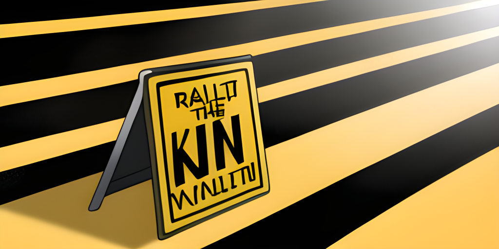

v1.x - (nightly)

Under development.
Variable
Extracted the set-env <NAME> <VALUE> completion as generic action.
Completions use the local environment so there are some limitations.
Spec
In specs it can be used as attached (default) or positional completion.
# yaml-language-server: $schema=https://carapace.sh/schemas/command.json
name: variable
completion:
positional:
- ["$carapace.env.NameValues"] # attached (NAME[=VALUE])
- ["$carapace.env.NameValues(true) ||| $shift(1)"] # positional (NAME)
- ["$carapace.env.NameValues(true) ||| $shift(1)"] # positional (VALUE)
- Use
shiftto skip previous arguments during positional completion.- Renamed
env.KnownEnvironmentVariablestoenv.Names.- Renamed
env.EnvironmentVariableValuestoenv.Values.